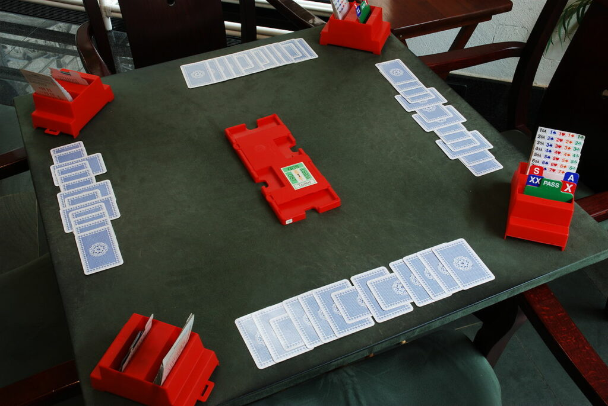
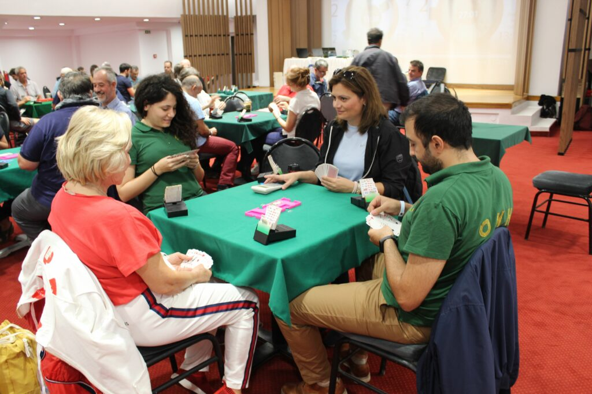

Γενικές πληροφορίες για το Μπριτζ
Το μπριτζ (contract bridge ή απλά bridge) είναι ομαδικό πνευματικό παιχνίδι που παίζεται με τράπουλα 52 φύλλων. Παίζεται από τέσσερις παίκτες σε δύο ανταγωνιστικά ζεύγη, με τους παίκτες γύρω από ένα τραπέζι (Β=Βορράς, Α=Ανατολή, Ν=Νότος, Δ=Δύση), με κάθε ζεύγος συνεργαζόμενων παικτών να κάθονται αντικριστά (Α-Δ, Β-Ν).

Εκατομμύρια άνθρωποι παίζουν μπριτζ παγκοσμίως, τουρνουά σε κλαμπ αλλά και διαδικτυακά, καθώς και ελεύθερη παρτίδα με φίλους στο σπίτι, καθιστώντας το ένα από τα πιο δημοφιλή παιχνίδια με τράπουλα στον κόσμο, ιδίως μεταξύ των ηλικιωμένων. Η Παγκόσμια Ομοσπονδία Μπριτζ (The World Bridge Federation – WBF) είναι το όργανο διοίκησης του διεθνούς αγωνιστικού μπριτζ, με πολυάριθμους άλλους φορείς σε περιφερειακό επίπεδο.
Η Ελληνική Ομοσπονδία Μπριτζ (Hellenic Bridge Federation – ΗBF) είναι το όργανο διοίκησης του Ελληνικού αγωνιστικού μπριτζ, με πολυάριθμους άλλους φορείς σε περιφερειακό επίπεδο. Μία από αυτές είναι και ο δικός μας όμιλος ( Όμιλος Μπριτζ Ηρακλείου – ΟΜΗ).

Το παιχνίδι
Οι κάρτες μοιράζονται στους παίκτες και στη συνέχεια ακολουθεί ο πλειστηριασμός (auction) ή η αγορά (bid) των παικτών για να πάρουν το συμβόλαιο (contract), προσδιορίζοντας πόσες λεβέ (tricks) θα πάρει το ζεύγος που θα ορίσει το συμβόλαιο (η πλευρά που θα πλειοδοτήσει), για να κερδίσει την παρτίδα. Κατά τη διάρκεια της αγοράς, οι εταίροι ανακοινώνουν πληροφορίες σχετικά με το “χέρι” τους, συμπεριλαμβανομένης της συνολικής δύναμης και του πλήθους των χρωμάτων (suits) τους, αλλά υπάρχουν και προσυμφωνημένοι κανόνες για χρήση κατά τη διάρκεια του παιχνιδιού.
Στη συνέχεια, οι κάρτες παίζονται, με την πλευρά που κέρδισε το συμβόλαιο να προσπαθεί να εκπληρώσει τη σύμβαση και τους αμυνόμενους να προσπαθούν να τους εμποδίσουν. Το αποτέλεσμα βαθμολογείται με βάση τον αριθμό των λεβέ που έχουν κερδηθεί, το συμβόλαιο και το μπόνους που συνδέεται με αυτό και το επίπεδο βαθμών στο οποίο βρίσκεται το κάθε ζευγάρι.